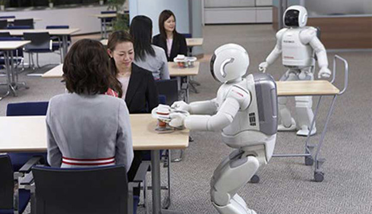
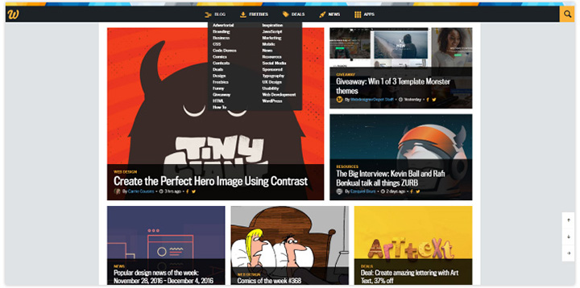

¡Se imparten los días sábados sin costo adicional y de manera opcional!
(un diplamdo por año)
los diplomados que se imparten son:
ELECTRÓNICA DIGITAL Y ROBÓTICA ELEMENTAL
Este curso tiene como objetivo final que puedas disfrutar en el proceso de diseño, aprendiendo a fabricar y finalmente montar tu propio robot con una variedad de actividades diversas y multidisciplinares.

FUNDAMENTOS DE BASES DE DATOS
El objetivo de la asignatura es que el estudiante comprenda el papel de las bases de datos dentro de un Sistema de Información, conozca las propiedades más relevantes que las definen y adquiera una metodología para su desarrollo y explotacion.
DISEÑO GRAFICO Y PAGINAS WEB
El objetivo del curso es que aprendas a crear páginas web desde el inicio, de forma práctica, conociendo los estándares y las mejores prácticas para realizar esta tarea. El conocer HTML y CSS también te permitirá mejorar la edición de posts y páginas en gestores de contenido como Blogger o WordPress o con Apps que te permitan crear pestañas para Facebook.

DISEÑO Y CONFIGURACIÓN DE REDES
El objetivo de este curso es brindar los conocimientos necesarios en gestión, administración y mantenimiento de comunicaciones informáticas, garantizando el flujo de información en Redes de Área Local (LAN) y Redes de Área Local inalámbrica (WLAN). Los participantes aprenderán a localizar averías, mantener y configurar equipos como routers, switches y puntos de acceso.. Al finalizar estarán preparados para certificar sus redes y hacer que funcionen de forma óptima y segura.